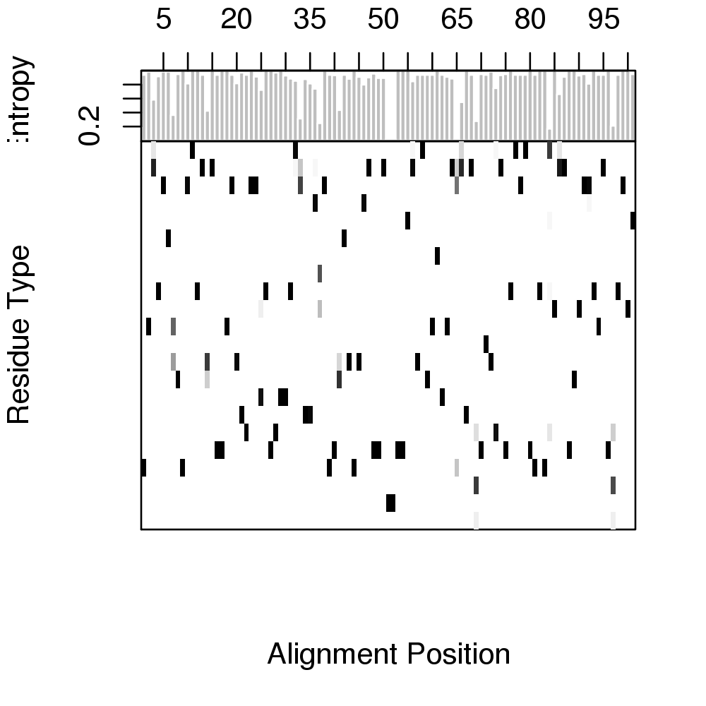
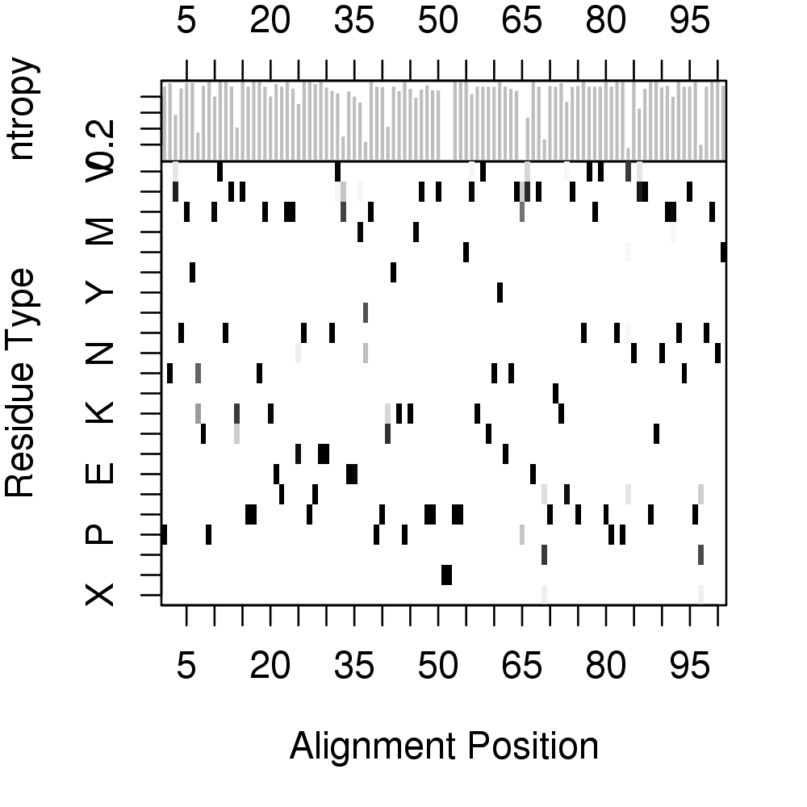
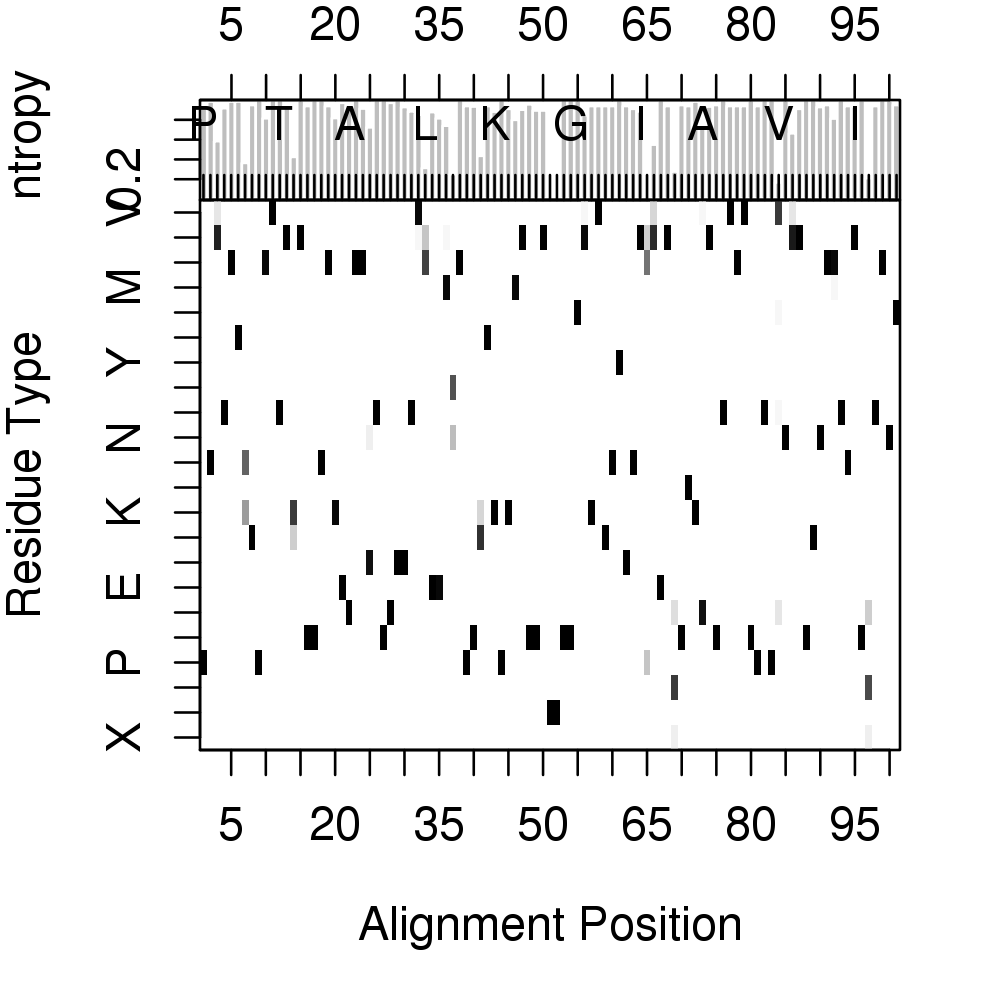
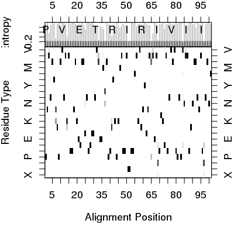
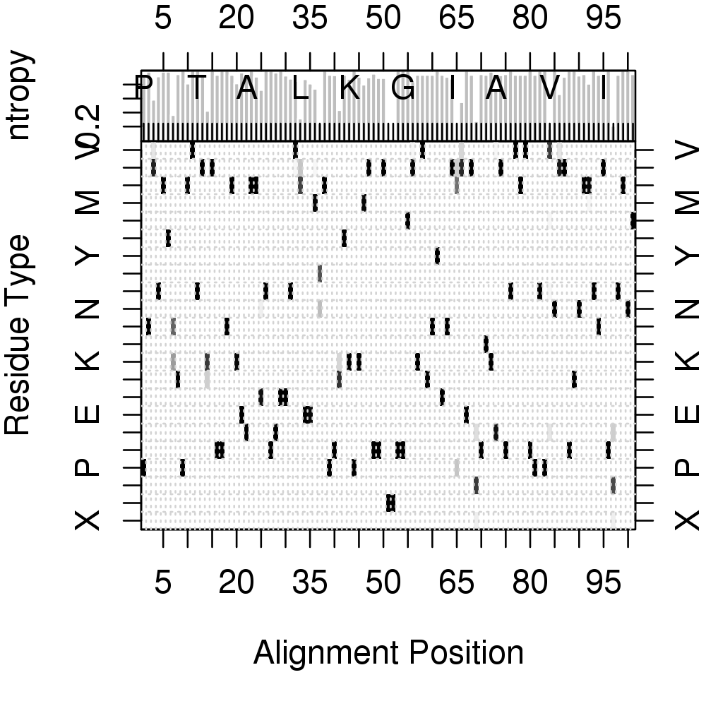
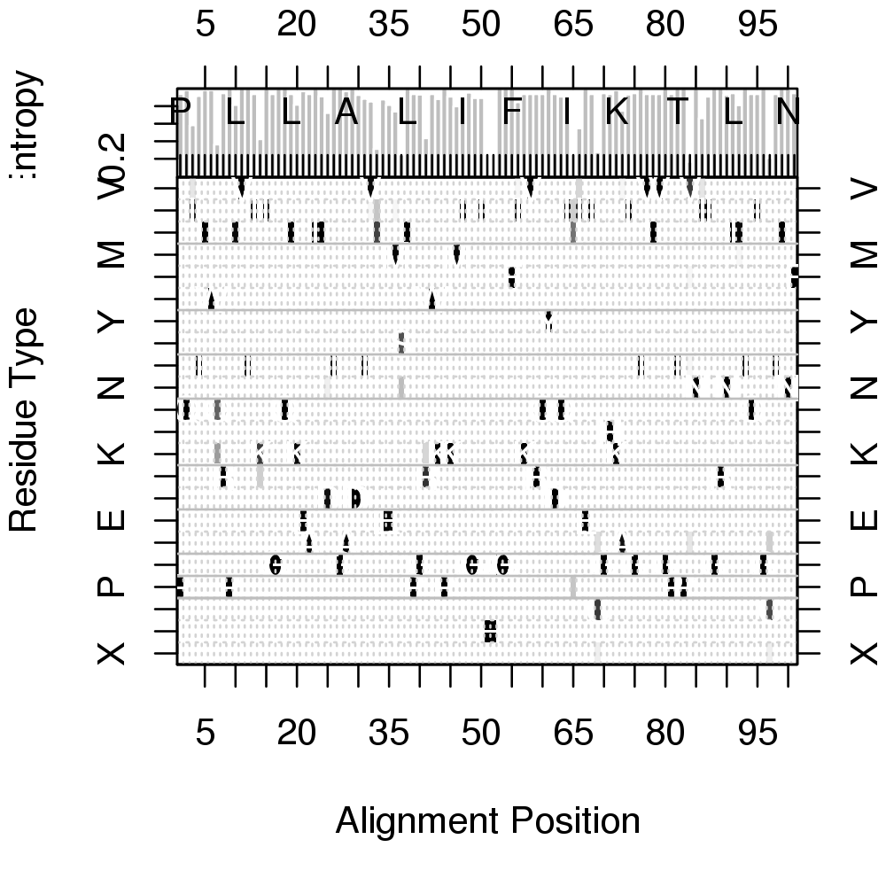

Shannon Entropy Score
Usage
entropy(alignment)
Arguments
- alignment
- sequence alignment returned from
read.fastaor an alignment character matrix.
Description
Calculate the sequence entropy score for every position in an alignment.
Details
Shannon's information theoretic entropy (Shannon, 1948) is an often-used measure of residue diversity and hence residue conservation.
Value
Returns a list with five components: H standard entropy score for a 22-letter alphabet. H.10 entropy score for a 10-letter alphabet (see below). H.norm normalized entropy score (for 22-letter alphabet), so that conserved (low entropy) columns (or positions) score 1, and diverse (high entropy) columns score 0. H.10.norm normalized entropy score (for 10-letter alphabet), so that conserved (low entropy) columns score 1 and diverse (high entropy) columns score 0. freq residue frequency matrix containing percent occurrence values for each residue type.
References
Grant, B.J. et al. (2006) Bioinformatics 22, 2695--2696.
Shannon (1948) The System Technical J. 27, 379--422.
Mirny and Shakhnovich (1999) J. Mol. Biol. 291, 177--196.
Note
In addition to the standard entropy score (based on a 22-letter
alphabet of the 20 standard amino-acids, plus a gap character ‘-’
and a mask character ‘X’), an entropy score, H.10, based on
a 10-letter alphabet is also returned.
For H.10, residues from the 22-letter alphabet are classified
into one of 10 types, loosely following the convention of Mirny and
Shakhnovich (1999):
Hydrophobic/Aliphatic [V,I,L,M],
Aromatic [F,W,Y],
Ser/Thr [S,T],
Polar [N,Q],
Positive [H,K,R],
Negative [D,E],
Tiny [A,G],
Proline [P],
Cysteine [C], and
Gaps [-,X].
The residue code ‘X’ is useful for handling non-standard aminoacids.
Examples
# Read HIV protease alignment aln <- read.fasta(system.file("examples/hivp_xray.fa",package="bio3d")) # Entropy and consensus h <- entropy(aln) con <- consensus(aln) names(h$H)=con$seq print(h$H)P Q I T L W Q 0.09227725 0.02393486 0.62933888 0.12466516 0.02393486 0.02393486 0.96209081 R P L V T I K 0.07686780 0.00000000 0.27975888 0.00000000 0.00000000 0.09227725 0.86959288 I G G Q L K E 0.00000000 0.09227725 0.00000000 0.00000000 0.09227725 0.27553960 0.04315583 A L L D T G A 0.09227725 0.00000000 0.13088164 0.41854739 0.00000000 0.00000000 0.04315583 D D T V L E E 0.00000000 0.10699510 0.17330174 0.22028327 1.03800101 0.18467696 0.27975888 M S L P G R W 0.39309794 1.13841259 0.00000000 0.09227725 0.10077052 0.85394134 0.09227725 K P K M I G G 0.17747686 0.00000000 0.13478305 0.30355500 0.14799610 0.06707466 0.16082302 I - - G G F I 0.16082302 0.04315583 0.04315583 0.00000000 0.00000000 0.00000000 0.23139803 K V R Q Y D Q 0.09227725 0.09227725 0.09227725 0.09227725 0.00000000 0.09227725 0.13535254 I - I E I C G 0.17330174 1.51410936 0.68264397 0.00000000 0.09227725 1.09295797 0.07686780 H K A I G T V 0.09227725 0.02393486 0.37975268 0.10077052 0.07686780 0.00000000 0.09227725 L V G P T P V 0.09227725 0.09227725 0.00000000 0.09227725 0.00000000 0.00000000 1.25743603 N I I G R N L 0.00000000 0.50872419 0.13535254 0.00000000 0.00000000 0.10699510 0.07686780 L T Q I G C T 0.28389290 0.00000000 0.09227725 0.09227725 0.00000000 1.19427669 0.09227725 L N F 0.00000000 0.00000000 0.07686780# Entropy for sub-alignment (positions 1 to 20) h.sub <- entropy(aln$ali[,1:20]) # Plot entropy and residue frequencies (excluding positions >=60 percent gaps) H <- h$H.norm H[ apply(h$freq[21:22,],2,sum)>=0.6 ] = 0 col <- mono.colors(32) aa <- rev(rownames(h$freq)) oldpar <- par(no.readonly=TRUE) layout(matrix(c(1,2),2,1,byrow = TRUE), widths = 7, heights = c(2, 8), respect = FALSE) # Plot 1: entropy par(mar = c(0, 4, 2, 2)) barplot(H, border="white", ylab = "Entropy", space=0, xlim=c(3.7, 97.3),yaxt="n" ) axis(side=2, at=c(0.2,0.4, 0.6, 0.8)) axis(side=3, at=(seq(0,length(con$seq),by=5)-0.5), labels=seq(0,length(con$seq),by=5)) box() # Plot2: residue frequencies par(mar = c(5, 4, 0, 2)) image(x=1:ncol(con$freq), y=1:nrow(con$freq), z=as.matrix(rev(as.data.frame(t(con$freq)))), col=col, yaxt="n", xaxt="n", xlab="Alignment Position", ylab="Residue Type")
axis(side=1, at=seq(0,length(con$seq),by=5))axis(side=2, at=c(1:22), labels=aa)
axis(side=3, at=c(1:length(con$seq)), labels =con$seq)
axis(side=4, at=c(1:22), labels=aa)
grid(length(con$seq), length(aa))box()
for(i in 1:length(con$seq)) { text(i, which(aa==con$seq[i]),con$seq[i],col="white") }
abline(h=c(3.5, 4.5, 5.5, 3.5, 7.5, 9.5, 12.5, 14.5, 16.5, 19.5), col="gray")
par(oldpar)